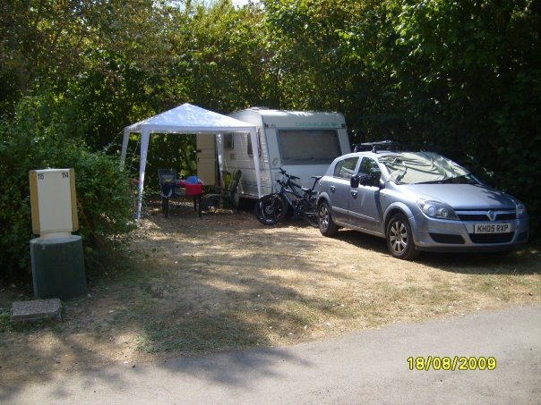

The workhorses

I had several Vauxhall Astras over the years and, with one exception, they were all estates. There were 1.7TDs and 2.0TDs, with low-blow turbos, high-blow turbos and probably several other varieties I've long since forgotten. Who knows? I work with computers; my name isn't Alfred Büchi.
What I do know is that they were absolutely brilliant workhorses.
Added together, I covered literally half a million miles in those Astras. They weren't treated gently either. These were working cars in every sense of the word.
The estate became my mobile workshop. I carried all my cabling equipment, tools and drills in the back, along with servers and PCs. Even the three-metre lengths of plastic trunking would fit inside the car, running from the rear doors right through to the passenger footwell.
And they didn't just work for Practice Net. I even hitched my old caravan to one and towed it all the way from home to Poitiers, travelling via Calais, and then all the way back again.

Across all those miles, carrying all that equipment and doing everything I asked of them, I can't remember a single serious hiccup.
I can't quite say my own driving record was as faultless.
Over the years I managed to amass six speeding tickets. I attended so many speed awareness courses that, by the end, I was probably qualified to teach one.
So the Astras may not have been the most exciting cars I've ever owned, but as dependable working vehicles they were difficult to fault. Half a million miles, computers, servers, tools, three-metre lengths of trunking, a caravan to France and back — they just got on with it.